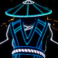
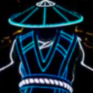

A discord szervert itt tudjátok megnézni
Web Fejlesztő : Mrkecskezrtwo#0011 Bot fejlesztő : 🌹Sleepy🌹#3837
 

Web Fejlesztő : Yamite-Chan#2641

Parancsok!
🙏-> Segítség
!supports = Kijeleníti,hogy ha problémád van kitől tudsz segitséget kérni!
!creators = Megjeleníti mind a Web,és mind a Bot Fejlesztőket!
!report = Ha ezt a parancsot használod,akkor a foundereknek egyedileg látható szobába beküldi a reportod!
🔧-> Moderáció
-
!ban = kitiltja az adott embert!
-
!kick = kirúgja az adott illetőt!
🧹-> Takarítás
!clear = Kitörli azt a mennyiségű üzenetet amit megadtál!
🎫-> TicketRendster
-
HAMAROSAN
🤖-> JövöbeliFejlesztések
-
!fejlesztesek = Ezzel a parancsal megtudjátok,hogy miket akarunk illetve,mik lesznek a jövőben fejlesztések!
😄->Fun
-
!számítás = Matematikai egyenletek tud kiszámolni!